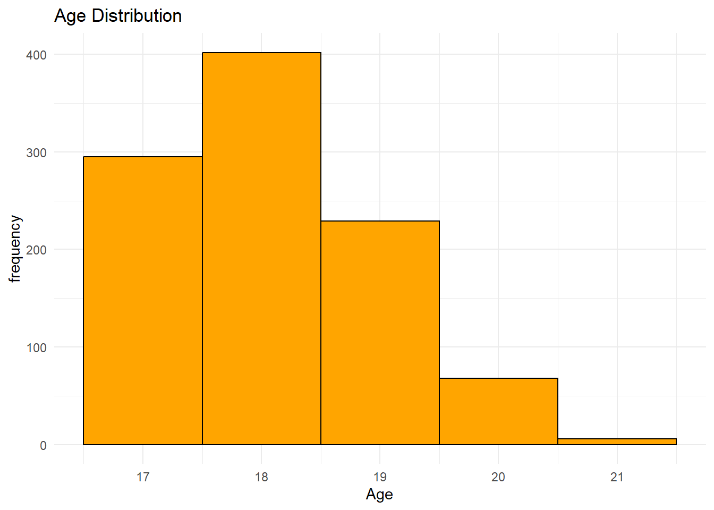
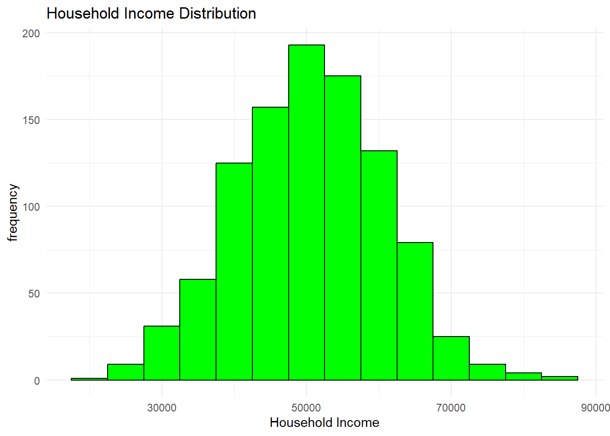
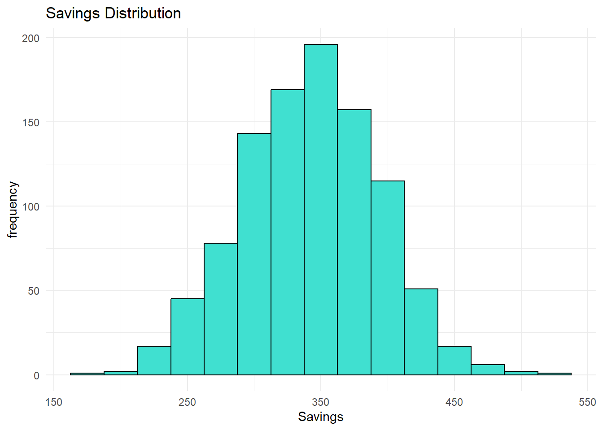
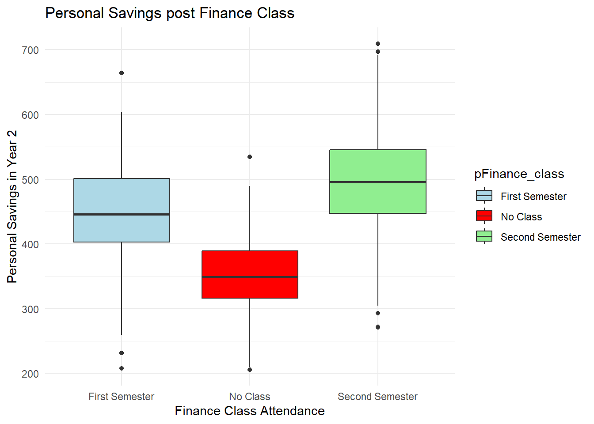
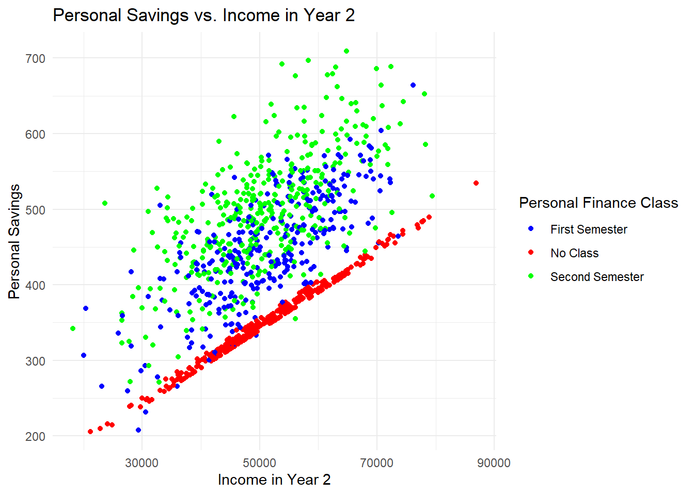

This exercise explores the effectiveness of a personal finance course on the saving habits of undergraduate students at a hypothetical university. At the beginning of the first semester, freshmen are surveyed about their current savings and prior exposure to personal finance education. They are offered optional personal finance class during either semester of their freshman year. At the start of the second year, the students are surveyed again on their savings.The purpose of the study is to find if the undergraduate students who enroll in the personal finance course show statistically significant differences in saving behavior compared to other undergraduate students.
#Required packageages are loadedlibrary(tidyverse)
Warning: package 'tidyverse' was built under R version 4.2.3
Warning: package 'ggplot2' was built under R version 4.2.3
Warning: package 'tibble' was built under R version 4.2.3
Warning: package 'tidyr' was built under R version 4.2.3
Warning: package 'readr' was built under R version 4.2.3
Warning: package 'purrr' was built under R version 4.2.3
Warning: package 'dplyr' was built under R version 4.2.3
Warning: package 'stringr' was built under R version 4.2.3
Warning: package 'forcats' was built under R version 4.2.3
Warning: package 'lubridate' was built under R version 4.2.3
── Attaching core tidyverse packages ──────────────────────── tidyverse 2.0.0 ──
✔ dplyr 1.1.3 ✔ readr 2.1.5
✔ forcats 1.0.0 ✔ stringr 1.5.0
✔ ggplot2 3.4.4 ✔ tibble 3.2.1
✔ lubridate 1.9.3 ✔ tidyr 1.3.0
✔ purrr 1.0.2
── Conflicts ────────────────────────────────────────── tidyverse_conflicts() ──
✖ dplyr::filter() masks stats::filter()
✖ dplyr::lag() masks stats::lag()
ℹ Use the conflicted package (<http://conflicted.r-lib.org/>) to force all conflicts to become errors
library(here)
Warning: package 'here' was built under R version 4.2.3
here() starts at C:/Users/malik/Documents/1. UGA Classes/15. Malika Spring 2024/MADASpring_24/Malikadhakhwa1-MADA-portfolio
library(parsnip)
Warning: package 'parsnip' was built under R version 4.2.3
library(broom)
Warning: package 'broom' was built under R version 4.2.3
library(plm)
Warning: package 'plm' was built under R version 4.2.3
Attaching package: 'plm'
The following objects are masked from 'package:dplyr':
between, lag, lead
I set a random seed for reproducibility purpose.I assumed the sample size of the undergraduate students not having prior personal finance education to be 1000.
# Set a seed for reproducibilityset.seed(123)# Define the number of total students who have never attended a personal finance class or lecture before the start of the semestern <-1000
I considered personal finance class completion as the key predictor variable and household income and age as additional predictors for the student savings in the second year. I generated synthetic data to model student’s age and household income distributions, and their decision to attend the personal finance course. I assumed the household income of students follows a normal distribution with a mean of $50000 and a standard deviation of $10000.
# Generating the synthetic datadata <-tibble(#Variable 1: Unique ID for each studentstudent_id =1:n,#Variable 2: Age (numeric variable) which is normally distributed with a mean of 18, sd of 3 and a minimum of 17age_year1 =pmax(17, round(rnorm(n, mean=18, sd=1))),#variable 3: Household Income (Numerical variable) which is normally distributed with a mean of 50000 and sd of 10000income_year1 =rnorm(n, mean =50000, sd=10000),#variable 4: Random assignment to personal finance class pFinance_class =sample(c('First Semester','Second Semester','No Class'), n, replace=TRUE),)#Print a first few lines of the datahead(data)
# A tibble: 6 × 4
student_id age_year1 income_year1 pFinance_class
<int> <dbl> <dbl> <chr>
1 1 17 40042. Second Semester
2 2 18 39600. Second Semester
3 3 20 49820. First Semester
4 4 18 48678. No Class
5 5 18 24507. No Class
6 6 20 60406. First Semester
To account for the impact of pre-existing saving behaviors, I included the savings at the beginning of Year 1 as a baseline measure in the model. For this analysis, I calculated the baseline savings as 0.5% of the annual household income plus $5 for each year of the student’s age.
# Define a function to simulate personal savings at the beginning of Year 1Savings_Year1 <-function(age_year1, income_year1) {#Calculation of the baseline personal saving of a student.The average savings amount is a sum of 0.5% of the household income and $5 for each year of the student's age base_savings_Year1 =0.005* income_year1 +5* age_year1 }
I added the baseline savings to the simulated data.
data <- data %>%mutate(pSavings_year1 =round(mapply(Savings_Year1, age_year1, income_year1), 2))
Data summary
summary(data)
student_id age_year1 income_year1 pFinance_class
Min. : 1.0 Min. :17.00 Min. :19521 Length:1000
1st Qu.: 250.8 1st Qu.:17.00 1st Qu.:43468 Class :character
Median : 500.5 Median :18.00 Median :50549 Mode :character
Mean : 500.5 Mean :18.09 Mean :50425
3rd Qu.: 750.2 3rd Qu.:19.00 3rd Qu.:57535
Max. :1000.0 Max. :21.00 Max. :83904
pSavings_year1
Min. :182.6
1st Qu.:307.1
Median :343.1
Mean :342.6
3rd Qu.:378.5
Max. :514.5
I employed visualization to explore the distribution of age, household income and savings of the students in Year 1.
# Create a plot to visualize the age distributionggplot(data, aes(x = age_year1)) +geom_histogram(binwidth =1, fill="orange", color="black") +theme_minimal() +xlab("Age")+ylab("frequency")+ggtitle("Age Distribution")

# Create a plot to visualize the age distributionggplot(data, aes(x = income_year1)) +geom_histogram(binwidth =5000, fill="green", color="black") +theme_minimal() +xlab("Household Income")+ylab("frequency")+ggtitle("Household Income Distribution")

# Create a plot to visualize the savings distributionggplot(data, aes(x = pSavings_year1)) +geom_histogram(binwidth =25, fill="turquoise", color="black") +theme_minimal() +xlab("Savings")+ylab("frequency")+ggtitle("Savings Distribution")

I calculated the personal savings of students for Year 2 by considering their initial savings, change in household income in Year 2, a year increase in the student’s age and whether they attended the personal finance class. I assumed the household income for Year 2 follows a normal distribution with a mean of $51000 and a standard deviation of $10500. My hypothesis is that attending personal finance course encourages to save more. Therefore, I modeled the additional savings from attending the class in the first semester with a normal distribution, setting the mean increase at $100 and the standard deviation at $50. For those attending in the second semester, the increase follows a normal distribution with a mean of $150 and a standard deviation of $60, reflecting a potentially greater impact due to the timing of the class. I did not attribute any increase in savings to students who opted out of the class. I adjusted the effects of incremental age and the change in household income using the similar magnitude of effect as the previous year.
# Function to simulate personal savings for Year 2Savings_Year2 <-function(pSavings_year1, income_change, class) { base_savings_Year2 = pSavings_year1 +0.005* income_change +5# 5 is the effect of one year increase in age#Additional effect of attending a personal finance class in either of the semesters. class_effect =ifelse(class=='Second Semester', rnorm(1,150,60),ifelse(class=='First Semester', rnorm(1,100,50),0))#Calculation of final savings. 'max' function ensures the final savings is not -ve.max(0, base_savings_Year2 + class_effect)}
I added the Year 2 components into the original dataset.
#Alternativedata <- data %>%mutate(age_year2 = age_year1 +1, #Age increment by 1 yearincome_year2 =rnorm(n, 51000, 10500), #New household income distributionincome_change = income_year2 - income_year1 ) data <- data %>%mutate( pSavings_year2 =round(mapply(Savings_Year2,pSavings_year1, income_change, pFinance_class),2))#Print the first few rows of the generated datahead(data)
# A tibble: 6 × 9
student_id age_year1 income_year1 pFinance_class pSavings_year1 age_year2
<int> <dbl> <dbl> <chr> <dbl> <dbl>
1 1 17 40042. Second Semester 285. 18
2 2 18 39600. Second Semester 288 19
3 3 20 49820. First Semester 349. 21
4 4 18 48678. No Class 333. 19
5 5 18 24507. No Class 213. 19
6 6 20 60406. First Semester 402. 21
# ℹ 3 more variables: income_year2 <dbl>, income_change <dbl>,
# pSavings_year2 <dbl>
Print summary to check data structure
summary(data)
student_id age_year1 income_year1 pFinance_class
Min. : 1.0 Min. :17.00 Min. :19521 Length:1000
1st Qu.: 250.8 1st Qu.:17.00 1st Qu.:43468 Class :character
Median : 500.5 Median :18.00 Median :50549 Mode :character
Mean : 500.5 Mean :18.09 Mean :50425
3rd Qu.: 750.2 3rd Qu.:19.00 3rd Qu.:57535
Max. :1000.0 Max. :21.00 Max. :83904
pSavings_year1 age_year2 income_year2 income_change
Min. :182.6 Min. :18.00 Min. :18145 Min. :-44163.8
1st Qu.:307.1 1st Qu.:18.00 1st Qu.:44224 1st Qu.:-10164.4
Median :343.1 Median :19.00 Median :50316 Median : 570.1
Mean :342.6 Mean :19.09 Mean :50921 Mean : 496.2
3rd Qu.:378.5 3rd Qu.:20.00 3rd Qu.:58051 3rd Qu.: 10121.1
Max. :514.5 Max. :22.00 Max. :86921 Max. : 47961.8
pSavings_year2
Min. :205.9
1st Qu.:367.6
Median :438.2
Mean :437.9
3rd Qu.:504.8
Max. :709.4
I generated a box plot to visualize the effect of the personal finance class on student’s savings. Additionally, I created a scatter plot to examine the relationship between household income and student’s savings stratified by attendance of personal finance class. These plots illustrate the underlying pattern within our synthesized data.
# Create box plot to visualize the effect of personal finance class on savingsggplot(data, aes(x = pFinance_class, y = pSavings_year2 , fill = pFinance_class)) +geom_boxplot() +scale_fill_manual(values =c("No Class"="red","First Semester"="lightblue","Second Semester"="lightgreen"))+theme_minimal() +labs(title ="Personal Savings post Finance Class",x ="Finance Class Attendance",y ="Personal Savings in Year 2")

#Plot savings vs household income grouped by personal finance classggplot(data, aes(x=income_year2, y=pSavings_year2, color=pFinance_class))+geom_point() +theme_minimal()+labs(title ="Personal Savings vs. Income in Year 2",x="Income in Year 2",y="Personal Savings",color ="Personal Finance Class")+scale_color_manual(values=c("No Class"="red","First Semester"="blue","Second Semester"="green"))

I saved the simulated data in a csv file.
#Save the simulated data to a CSV filewrite_csv(data, here("data.csv"))
I calculated students’ average savings in the second year based on the personal finance class attended.
effect_analysis <- data %>%group_by(pFinance_class) %>%summarize(avg_savings =mean(pSavings_year2),sd_savings =sd(pSavings_year2) )print(effect_analysis)
# A tibble: 3 × 3
pFinance_class avg_savings sd_savings
<chr> <dbl> <dbl>
1 First Semester 447. 71.8
2 No Class 352. 55.9
3 Second Semester 497. 78.3
I fitted a linear model to the synthetic data to assess Year 2 savings, using enrollment of the personal finance class as the primary predictor, along with initial savings and changes in household income. My aim is to determine whether the model accurately recover the parameters I used to generate the data.
#Fit linear model with not taking personal finance class as referencedata$pFinance_class<-as.factor(data$pFinance_class)data$pFinance_class<-relevel(data$pFinance_class, ref ="No Class")model1<-linear_reg() %>%set_engine("lm") %>% parsnip::fit(pSavings_year2 ~ pFinance_class + pSavings_year1 + income_change, data=data)tidy(model1)
The estimates are statistically significant and closely align with the parameters set during the data generation process. Enrollment in personal finance classes during the first and second semester led to an increase in personal savings approximately by approximately 98 and 149, respectively. I set the amounts at 100 and 150 respectively in the simulation.
I applied a fixed effect model to determine if it would yield consistent results with those observed from the initial analysis. I converted teh data to ‘long format’ to perform the fixed effect analysis.
# Create a time variable and reshape the data to a long formatdata_long <- data %>%#Year 1 datamutate(time=1, pFinance_class ="No Class") %>%select(student_id, time, age=age_year1, income=income_year1, pSavings=pSavings_year1, pFinance_class = pFinance_class) %>%#Year 2 data bind_rows( data %>%mutate(time=2) %>%select(student_id, time, age=age_year2, income= income_year2, pSavings=pSavings_year2, pFinance_class) ) %>%mutate(pFinance_class =as.factor(pFinance_class))#Check the structurehead(data_long)
# A tibble: 6 × 6
student_id time age income pSavings pFinance_class
<int> <dbl> <dbl> <dbl> <dbl> <fct>
1 1 1 17 40042. 285. No Class
2 2 1 18 39600. 288 No Class
3 3 1 20 49820. 349. No Class
4 4 1 18 48678. 333. No Class
5 5 1 18 24507. 213. No Class
6 6 1 20 60406. 402. No Class
I applied fixed effect model to the long format of data.
# First, convert the data frame to a pdata.frame, which is required for plm functions.data_panel <-pdata.frame(data_long, index =c("student_id", "time"))#Setting not attending personal finance class as the reference for the analysisdata_panel$pFinance_class <-relevel(data_panel$pFinance_class, ref ="No Class")# Fit a fixed effects modelfe_model <-plm(pSavings ~ pFinance_class + income + age +factor(time),data = data_panel,model ="within")summary(fe_model)
Oneway (individual) effect Within Model
Call:
plm(formula = pSavings ~ pFinance_class + income + age + factor(time),
data = data_panel, model = "within")
Balanced Panel: n = 1000, T = 2, N = 2000
Residuals:
Min. 1st Qu. Median 3rd Qu. Max.
-8.9745e+01 -9.6796e+00 4.6633e-14 9.6796e+00 8.9745e+01
Coefficients: (1 dropped because of singularities)
Estimate Std. Error t-value Pr(>|t|)
pFinance_classFirst Semester 9.7813e+01 3.6691e+00 26.6588 < 2e-16 ***
pFinance_classSecond Semester 1.4864e+02 3.4957e+00 42.5201 < 2e-16 ***
income 5.0267e-03 9.6144e-05 52.2829 < 2e-16 ***
age 4.9795e+00 2.6179e+00 1.9021 0.05745 .
---
Signif. codes: 0 '***' 0.001 '**' 0.01 '*' 0.05 '.' 0.1 ' ' 1
Total Sum of Squares: 10278000
Residual Sum of Squares: 1029900
R-Squared: 0.89979
Adj. R-Squared: 0.79889
F-statistic: 2235.9 on 4 and 996 DF, p-value: < 2.22e-16
The fixed effect analysis produced results that reflected those from the initial model.